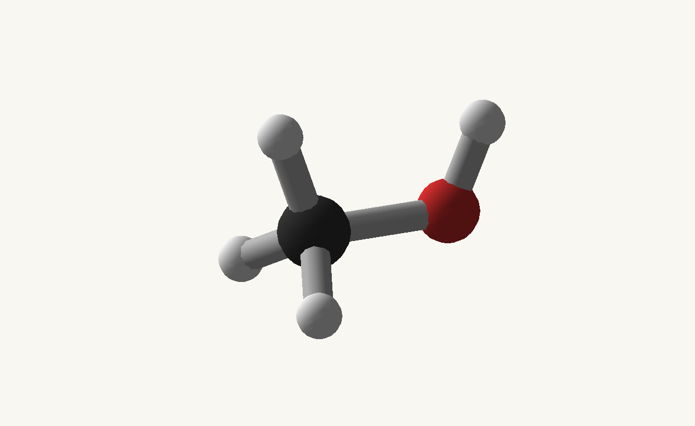
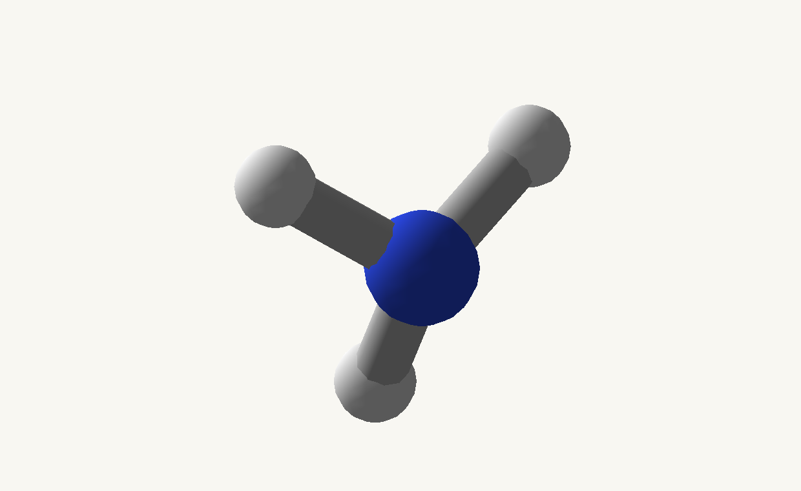
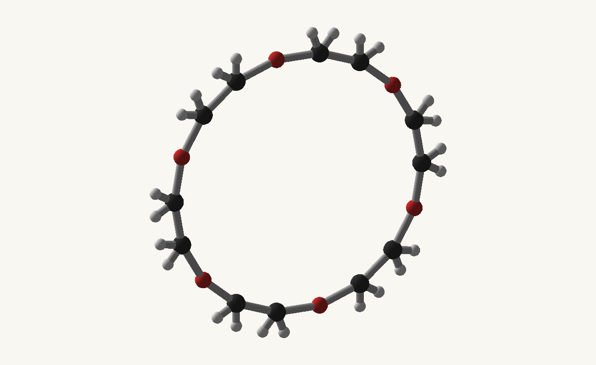

Avogadro guide · Minecraft 1.12.2 / Cleanroom
Build, connect, and edit structures
A fragment is a reusable set of atoms and bonds. Name the atoms you connect often, then assemble or edit copies without changing the original.
Imports and complete companion files
Examples are methods inside the downloadable companion classes. Copy the methods you need into your own class and keep the imports at the top. GuideModels contains the reusable chemical recipes; GuideTasks contains the operations. These files are documentation examples, not built-in library content.
Java model recipes · Java operations · Complete Groovy model script · Groovy client helpers
The complete Groovy model script can be saved as groovy/postInit/avogadro_examples.groovy. It includes the reusable GuideModels class and registers all ten chemical examples through the reloadable script registry. The separate client helper download is a reference for client integrations: keep it out of common postInit scripts and dedicated-server entry points. Java users should likewise copy common operations into their common class and keep screen/export operations in a client class.
import io.github.wurtzitane.avogadro.api.*;
import io.github.wurtzitane.avogadro.molecule.*;
// Client code only:
import io.github.wurtzitane.avogadro.api.client.*;
import io.github.wurtzitane.avogadro.client.export.*;
import java.util.List;
import java.util.Map;Start with explicit atoms
Atom indices start at zero. Every explicit atom, including H, must be supplied. Coordinates share one consistent length unit; the examples use ångströms for convenience. Choose explicit bonds to avoid distance-based guesses.
Java · method inside your host class; imports and full files below.
public static StructureFragment water() {
// All atoms are explicit: StructureBuilder does not add hydrogens.
return new StructureBuilder()
.atom("O", 0, 0, 0)
.atom("H", .7586, .5043, 0)
.atom("H", -.7586, .5043, 0)
.bond(0, 1).bond(0, 2)
.attachment("oxygen", 0)
.atomConfiguration(0, new AtomicConfiguration(8, 8, 0, List.of(2, 6)))
.atomConfiguration(1, new AtomicConfiguration(1, 0, 0, List.of(1)))
.atomConfiguration(2, new AtomicConfiguration(1, 0, 0, List.of(1)))
.build();
}Groovy · same API; place methods in your script or client helper as described.
static StructureFragment water() {
// All atoms are explicit: StructureBuilder does not add hydrogens.
return new StructureBuilder()
.atom("O", 0, 0, 0)
.atom("H", .7586, .5043, 0)
.atom("H", -.7586, .5043, 0)
.bond(0, 1).bond(0, 2)
.attachment("oxygen", 0)
.atomConfiguration(0, new AtomicConfiguration(8, 8, 0, List.of(2, 6)))
.atomConfiguration(1, new AtomicConfiguration(1, 0, 0, List.of(1)))
.atomConfiguration(2, new AtomicConfiguration(1, 0, 0, List.of(1)))
.build();
}JSON · one definition per file unless a different destination is shown.
{
"name": "Water",
"atoms": [
{
"e": "O",
"x": 0,
"y": 0,
"z": 0
},
{
"e": "H",
"x": 0.7586,
"y": 0.5043,
"z": 0
},
{
"e": "H",
"x": -0.7586,
"y": 0.5043,
"z": 0
}
],
"bonds": [
[
0,
1
],
[
0,
2
]
]
}| Call | Meaning | Easy mistake |
|---|---|---|
atom("O", x, y, z) | Append an atom and return the builder | Does not return its index; use addAtom for that |
bond(0, 1) | Single bond between existing atoms | The second atom is index 1, not 2 |
attachment("oxygen", 0) | A name for atom 0 | Does not create a new atom or move it |
build() | Return an immutable fragment | Later edits work on copies |
| JSON field / entry | Meaning | Easy mistake |
|---|---|---|
atoms[] | Each object adds one atom: e is its element symbol; x, y, z are its coordinates. Its array position is its zero-based index. | Include every H atom in an explicit model; no implicit hydrogen is added. |
bonds[] | An entry [0,1] makes a single bond between atoms 0 and 1. An optional third entry selects the bond type. | Omitting bonds enables distance inference; use an empty array for no bonds. |
structure.attachments | Map names to atom indices, for example {"oxygen":0} names atom 0. | Move atoms and bonds inside structure too; do not mix it with top-level atoms/bonds. |
| The completed molecule object | The loader validates and builds the definition when the file is loaded. | There is no build field. The file path supplies the molecule ID. |
Connect methyl and hydroxyl pieces into methanol
Java · method inside your host class; imports and full files below.
public static StructureFragment methyl() {
return new StructureBuilder().atom("C", 0, 0, 0)
.atom("H", -.36, 1.03, 0).atom("H", -.36, -.515, .892)
.atom("H", -.36, -.515, -.892)
.bond(0, 1).bond(0, 2).bond(0, 3)
.attachment("carbon", 0).build();
}Groovy · same API; place methods in your script or client helper as described.
static StructureFragment methyl() {
return new StructureBuilder().atom("C", 0, 0, 0)
.atom("H", -.36, 1.03, 0).atom("H", -.36, -.515, .892)
.atom("H", -.36, -.515, -.892)
.bond(0, 1).bond(0, 2).bond(0, 3)
.attachment("carbon", 0).build();
}Java · method inside your host class; imports and full files below.
public static StructureFragment hydroxyl() {
// An open O site for assembly; this piece alone is not an alcohol.
return new StructureBuilder().atom("O", 1.43, 0, 0).atom("H", 1.8, .85, 0)
.bond(0, 1).attachment("oxygen", 0).build();
}Groovy · same API; place methods in your script or client helper as described.
static StructureFragment hydroxyl() {
// An open O site for assembly; this piece alone is not an alcohol.
return new StructureBuilder().atom("O", 1.43, 0, 0).atom("H", 1.8, .85, 0)
.bond(0, 1).attachment("oxygen", 0).build();
}Java · method inside your host class; imports and full files below.
public static StructureFragment methanol() {
// Fragment positions already line up. link() only adds the O–C bond.
return StructureAssembly.builder()
.part("methyl", methyl()).part("hydroxyl", hydroxyl())
.link("methyl/carbon", "hydroxyl/oxygen", BondType.SINGLE)
.build().build(); // recipe first, then finite geometry
}Groovy · same API; place methods in your script or client helper as described.
static StructureFragment methanol() {
// Fragment positions already line up. link() only adds the O–C bond.
return StructureAssembly.builder()
.part("methyl", methyl()).part("hydroxyl", hydroxyl())
.link("methyl/carbon", "hydroxyl/oxygen", BondType.SINGLE)
.build().build(); // recipe first, then finite geometry
}methyl/carbon and hydroxyl/oxygen.

Edit a copy: water to an ammonia model
Java · method inside your host class; imports and full files below.
public static StructureEditResult ammonia() {
// Change O to N and add the third hydrogen: H2O -> NH3 as a graph edit.
// This demonstrates authoring; it does not simulate a reaction.
var editor = water().edit().replaceAtom(0, "N").moveAtom(0, 0, 0, .25);
int hydrogen = editor.addAtom("H", 0, -.85, -.35);
return editor.setBond(0, hydrogen, BondType.SINGLE).build();
}Groovy · same API; place methods in your script or client helper as described.
static StructureEditResult ammonia() {
// Change O to N and add the third hydrogen: H2O -> NH3 as a graph edit.
// This demonstrates authoring; it does not simulate a reaction.
def editor = water().edit().replaceAtom(0, "N").moveAtom(0, 0, 0, .25);
int hydrogen = editor.addAtom("H", 0, -.85, -.35);
return editor.setBond(0, hydrogen, BondType.SINGLE).build();
}

| Operation | Index rule / result |
|---|---|
| Replace or move atom | Uses the current geometry index; changing element clears its atom configuration |
| Create/replace/remove bond | Use setBond or removeBond; no implied chemistry repair |
| Delete several atoms | The whole selection resolves before deletion; surviving bonds, names, and overrides remap |
| Append a fragment | Appends atoms and qualifies its names with the instance name |
| Finish editing | build() returns the fragment plus original-to-final map; removed atoms map to -1 |
| JSON edits entry | Required fields | Index rule / result |
|---|---|---|
op: "replaceAtom" | index, e | Uses the current atom index; changing the element clears its old atomic configuration. |
op: "moveAtom" | index, x, y, z | Moves one atom without changing its identity or bonds. |
op: "setBond" / "removeBond" | from, to; optional type for setBond | Creates/replaces or removes one bond. No implied chemistry repair. |
op: "removeAtoms" | indices array | Resolves the entire selection first, then remaps surviving bonds, names, and atomic data. |
op: "append" | instance, structure | Appends the fragment and prefixes its attachment names with the instance name. |
End of the edits array | No extra finish field | Edits run in array order on a copy. JSON does not expose the Java index-map result. |
Read the index map after deleting atoms
Java · method inside your host class; imports and full files below.
public static StructureEditResult isolateOxygen() {
// Both selections refer to the ORIGINAL three-atom water fragment.
// Deletion resolves the whole selection before removing any atoms.
return GuideModels.water().edit().removeAtoms(1, 2).build();
// oldToNew() is [0, -1, -1]. The resulting O atom is not a water molecule.
}Groovy · same API; place methods in your script or client helper as described.
static StructureEditResult isolateOxygen() {
// Both selections refer to the ORIGINAL three-atom water fragment.
// Deletion resolves the whole selection before removing any atoms.
return GuideModels.water().edit().removeAtoms(1, 2).build();
// oldToNew() is [0, -1, -1]. The resulting O atom is not a water molecule.
}result.oldToNew() when another part of your code still refers to the original atoms. Newly appended atoms have no original index.Save edits or copy a registered definition
This second example changes water into an H2O2 model. Its method names and sequential indices are the same ones used by JSON edits.
Java · method inside your host class; imports and full files below.
public static StructureEdits hydrogenPeroxideEdits() {
// Water indices: O=0, H=1, H=2. Replace H=2 with O, then add its H.
return StructureEdits.builder().replaceAtom(2, "O").moveAtom(2, -.9, -.95, 0)
.atom("H", -1.65, -.6, .4).setBond(2, 3, BondType.SINGLE).build();
}Groovy · same API; place methods in your script or client helper as described.
static StructureEdits hydrogenPeroxideEdits() {
// Water indices: O=0, H=1, H=2. Replace H=2 with O, then add its H.
return StructureEdits.builder().replaceAtom(2, "O").moveAtom(2, -.9, -.95, 0)
.atom("H", -1.65, -.6, .4).setBond(2, 3, BondType.SINGLE).build();
}Java · method inside your host class; imports and full files below.
public static MoleculeSpec peroxideCopy() {
return AvogadroApi.builder("guide:peroxide").copy("guide:water")
.name("Hydrogen peroxide").edits(hydrogenPeroxideEdits()).build();
}Groovy · same API; place methods in your script or client helper as described.
static MoleculeSpec peroxideCopy() {
return AvogadroApi.builder("guide:peroxide").copy("guide:water")
.name("Hydrogen peroxide").edits(hydrogenPeroxideEdits()).build();
}JSON · one definition per file unless a different destination is shown.
{
"copy": "guide:water",
"name": "Hydrogen peroxide",
"edits": [
{
"op": "replaceAtom",
"index": 2,
"e": "O"
},
{
"op": "moveAtom",
"index": 2,
"x": -0.9,
"y": -0.95,
"z": 0
},
{
"op": "atom",
"e": "H",
"x": -1.65,
"y": -0.6,
"z": 0.4
},
{
"op": "setBond",
"from": 2,
"to": 3,
"type": "SINGLE"
}
]
}Java · method inside your host class; imports and full files below.
public static MoleculeDef peroxide(MoleculeDef water) {
// Carries over names and associations. Rename/rebind deliberately if needed.
return MoleculeEdits.apply("guide:peroxide", water, hydrogenPeroxideEdits(), false);
}Groovy · same API; place methods in your script or client helper as described.
static MoleculeDef peroxide(MoleculeDef water) {
// Carries over names and associations. Rename/rebind deliberately if needed.
return MoleculeEdits.apply("guide:peroxide", water, hydrogenPeroxideEdits(), false);
}materialize(true); edit the template if it should remain adjustable.Place multiple copies
Java · method inside your host class; imports and full files below.
public static StructureFragment waterPair() {
var water = GuideModels.water();
// A disconnected pair of water molecules, not an inferred hydrogen bond.
return water.qualified("first").append("second",
water.rotate(0, 0, 1, 180).translate(3.2, 0, 0));
}Groovy · same API; place methods in your script or client helper as described.
static StructureFragment waterPair() {
def water = GuideModels.water();
// A disconnected pair of water molecules, not an inferred hydrogen bond.
return water.qualified("first").append("second",
water.rotate(0, 0, 1, 180).translate(3.2, 0, 0));
}| Tool | Use it for |
|---|---|
translate / rotate / scale / affine | Return transformed copies. Rotate takes axis x/y/z plus degrees. |
qualified("first") | Give existing attachment names an instance prefix |
instances(prefix, transforms) | Make authored instances named prefix[0], prefix[1], … |
group(name, assembly, transform) | Place a nested collection as one unit |
transformLast(matrix) | Replace the last node’s transform; compose matrices yourself when combining transforms |
| JSON location / entry | Use it for |
|---|---|
structure.operations[] | Ordered operations. Use op="translate" with by:[x,y,z], op="rotate" with axis and degrees, op="scale" with by, or op="affine" with matrix. |
op: "append", instance: "first" | Append the supplied structure and qualify its attachment names. There is no standalone qualified JSON operation. |
op: "instances", prefix, transforms | Place authored matrix copies named prefix[0], prefix[1], and so on. |
Assembly node kind: "group", name, body, transform | Place a nested assembly as one unit. |
Assembly node transform | A 3 × 4 authored matrix on that node; there is no transformLast field. |
Close an 18-crown-6 ring
Six OCC units make the 18-membered ring. The author supplies the radius and rotation; the last link closes the open repeat boundary. This is a simple planar display model of C12H24O6, not its preferred conformation.
Java · method inside your host class; imports and full files below.
public static StructureAssembly crownRing() {
var unit = new StructureBuilder();
for (int i = 0; i < 3; i++) {
double angle = Math.toRadians(i * 20);
double x = 4.4 * Math.cos(angle), y = 4.4 * Math.sin(angle);
int atom = unit.addAtom(i == 0 ? "O" : "C", x, y, 0);
if (i > 0) {
int h1 = unit.addAtom("H", x, y, .95);
int h2 = unit.addAtom("H", x, y, -.95);
unit.bond(atom, h1).bond(atom, h2);
}
}
// Indices after H insertion: O=0, first C=1, second C=4.
var fragment = unit.bond(0, 1).bond(1, 4).attachment("head", 0).attachment("tail", 4).build();
double c = Math.cos(Math.PI / 3), s = Math.sin(Math.PI / 3);
double[][] turn = {{c,-s,0,0}, {s,c,0,0}, {0,0,1,0}};
return StructureAssembly.builder()
.repeat("ring", StructureAssembly.builder().part("unit", fragment).build(), 6, turn)
.neighbor("unit/tail", "unit/head", 1, BondType.SINGLE)
// Neighbor links leave the boundary open; this closes it explicitly.
.link("ring[last]/unit/tail", "ring[first]/unit/head", BondType.SINGLE).build();
}Groovy · same API; place methods in your script or client helper as described.
// Groovy can read the identical assembly recipe exported by the Java companion.
import com.google.gson.JsonParser
import io.github.wurtzitane.avogadro.api.StructureAssembly
def recipe = JsonParser.parseString(new File('scripts/examples/crown-assembly.json').text).asJsonObject
def ring = StructureAssembly.fromJson(recipe).build()
mods.avogadro.molecules.register(mods.avogadro.molecules.builder('guide:crown').structure(ring))Download the complete JSON assembly. In a molecule file use {"structure":{"assembly": …}} with this recipe as the value.

